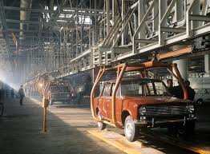
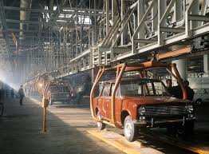

Производство
ВАЗ-2101 започва да се произвежда през 1970 година. Това е първият модел, произведен от съвместното предприятие между СССР и италианската компания Fiat. ВАЗ-2101 е базиран на Fiat 124, но претърпява значителни промени, за да отговаря на съветските условия.
Модификации
Автомобилът претърпява редица подобрения спрямо оригиналния Fiat 124. Окачването и шасито са подсилени, за да се справят с по-тежките условия по съветските пътища, и е добавен нов двигател с обем 1.2 литра.
Популярност
ВАЗ-2101 се произвежда до 1988 година, а през това време от него са произведени над 4.8 милиона броя. Автомобилът става изключително популярен не само в СССР, но и в много други държави от Източния блок.
Моделни имена
В СССР моделът е познат под името "Жигули", а за износ се използва името "Лада", тъй като се смяташе, че "Жигули" може да се произнася странно в други езици.
Конструкция и характеристики
ВАЗ-2101 е със задно предаване, 4-степенна механична скоростна кутия и двигател с мощност около 60 к.с. Максималната му скорост е около 140 км/ч, а разходът на гориво е около 8 литра на 100 км.
Влияние
Лада ВАЗ-2101 се смята за един от символите на съветската автомобилна индустрия. Моделът е оказал значително влияние върху развитието на автомобилите в страните от бившия Източен блок и остава една от най-разпознаваемите икони на руската автомобилна история.
Прозвище
В България и други страни от бившия социалистически лагер, Лада ВАЗ-2101 често се нарича "Копейка", което идва от асоциацията с евтин и достъпен транспорт.
 
